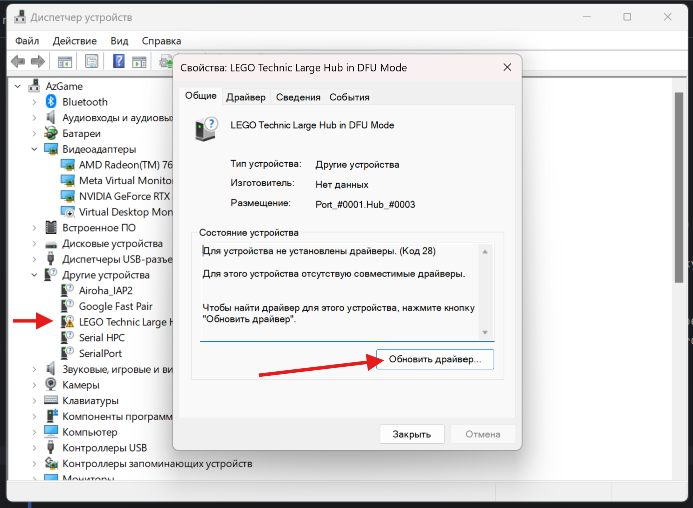
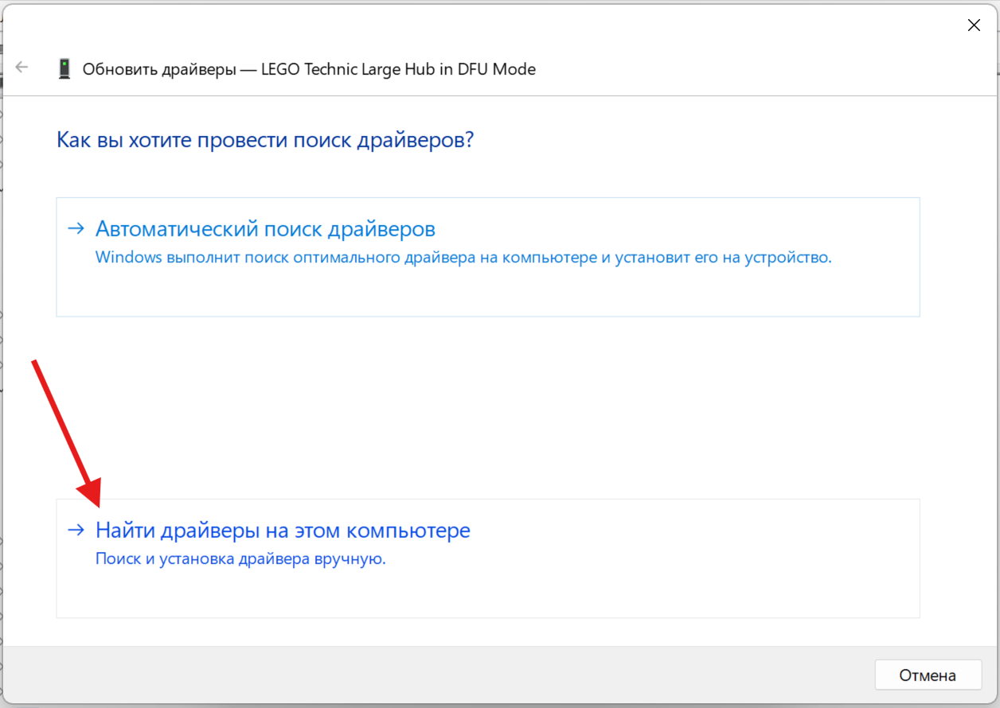
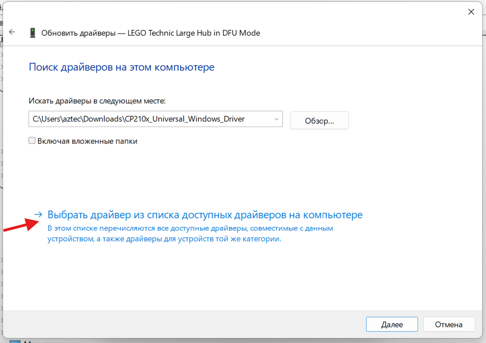
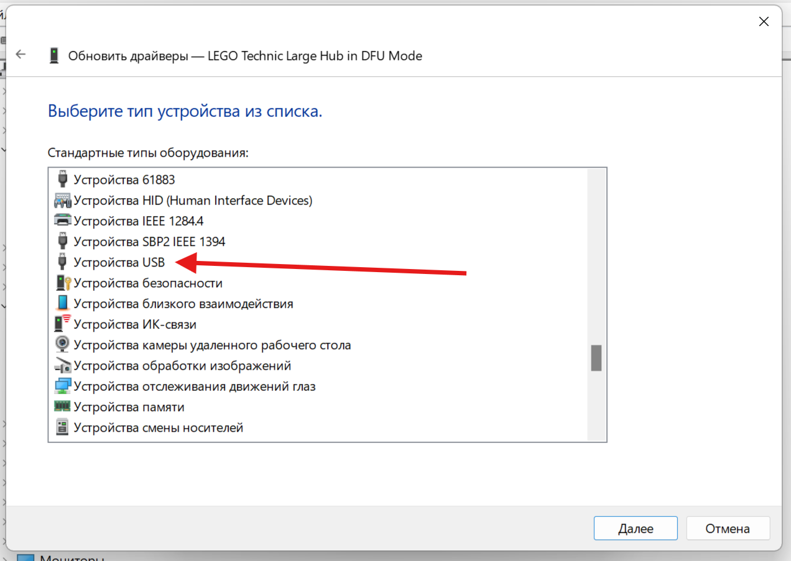
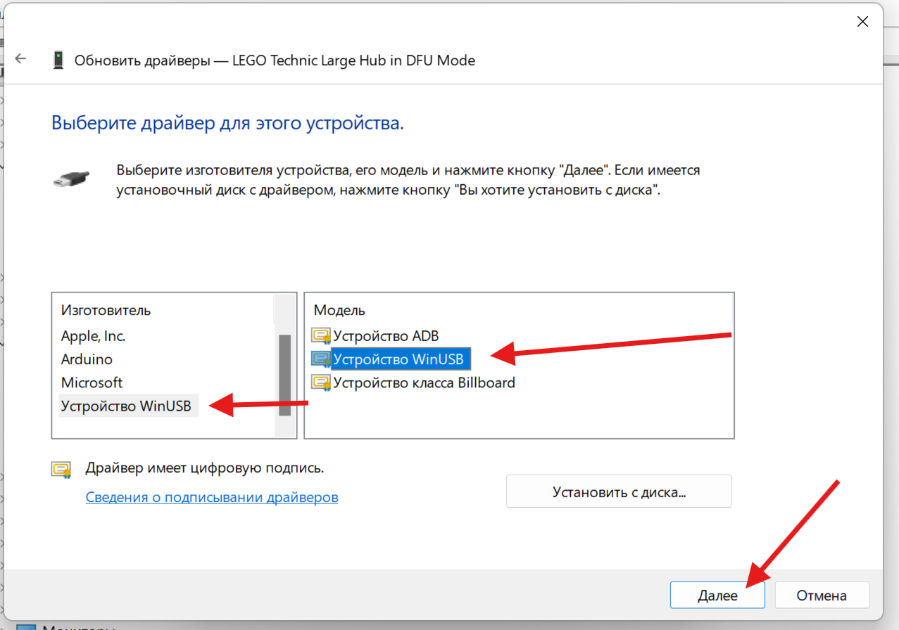
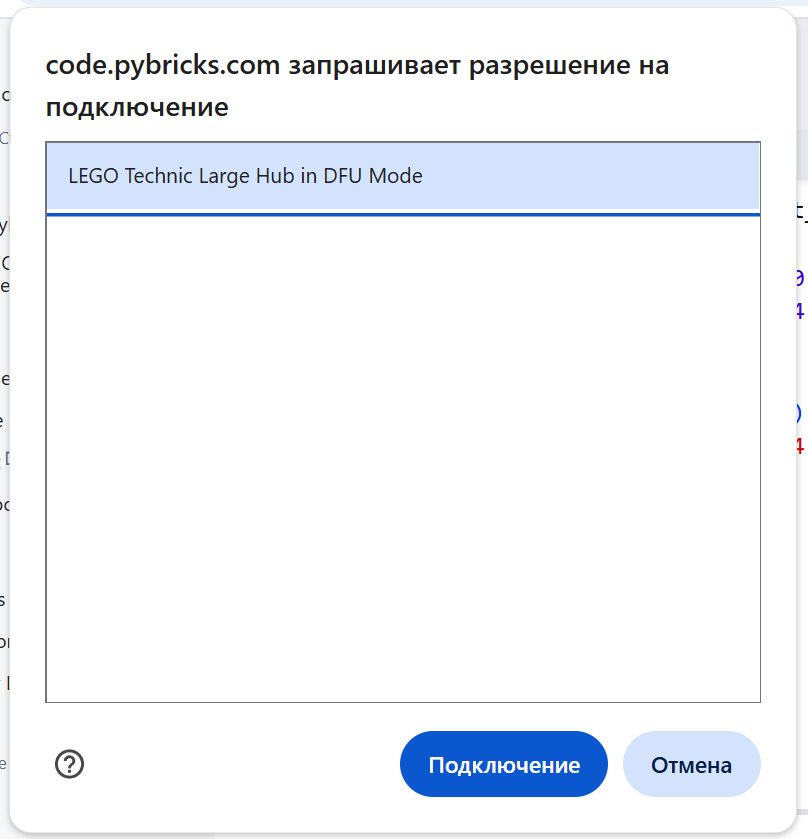
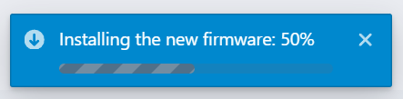

Установка Pybricks на Spike PRIME Hub
Установка Pybricks выполняется полностью через браузер. Вам понадобится компьютер с браузером Google Chrome или Microsoft Edge (поддержка Web Bluetooth).
Видеоинструкция
Инструкция по установке
1. Откройте редактор
Перейдите на сайт code.pybricks.com.
2. Переведите хаб в режим обновления (DFU)
Этот шаг необходим для записи новой прошивки в память хаба.
- Убедитесь, что хаб выключен и USB-кабель отключен.
- Нажмите и удерживайте кнопку Bluetooth (кнопка со значком Bluetooth на передней панели).
- Продолжая удерживать кнопку, вставьте USB-кабель, подключенный к компьютеру.
- Дождитесь, пока индикатор кнопки Bluetooth начнет мигать розово-фиолетовым цветом (5-10 секунд).
- Отпустите кнопку.
Видео
4. Смена драйвера
- Нажать правой кнопкой мыши на Пуск и выбрать "Диспетчер устройств".
- Найти устройство с названием "LEGO Technic Large hub in DFU Mode"
- Дважды кликнуть на устройство
- Нажать на "Обновить драйвер"
- Нажать на "Найти драйверы на этом компьютере"
- Нажать на "Выбрать драйвер из списка"
- В списке выбрать "Устройства USB"
- Выбрать "Устройство WinUSB" и модель "Устройство WinUSB" и нажать "Далее"
Скриншоты
    
5. Запустите установку
- В левом меню редактора Pybricks нажмите кнопку "Install Pybricks Firmware" (значок микросхемы/загрузки).
- В списке устройств выберите "SPIKE Prime Hub".
- Поставьте галочку под лицензией и нажмите Next.
- Задайте имя для хаба.
- Нажмите синюю кнопку "Install".
- В системном окне выбора устройства выберите ваш хаб и нажмите "Подключение".
- Дождитесь завершения загрузки. После установки хаб перезагрузится. \
Скриншоты
6  7 
Как вернуть заводскую прошивку?
Pybricks не заменяет загрузчик хаба, поэтому вы всегда можете вернуться назад.
1. Откройте официальное приложение LEGO® Education SPIKE™.
2. Подключите хаб по USB.
3. Приложение обнаружит, что прошивка не соответствует официальной, и предложит обновить её. Нажмите "Обновить" (Update), и заводская прошивка будет восстановлена.
Также можно вернуть оригинальную прошивку в Pybricks в пункте "Restore Official LEGO Firmware".